Pharma Plus
A healthcare product concept for easier medication access.
Designed an MVP to bridge the pharmaceuticals accessibility gap for customers residing outside major cities in Nigeria
View Case Study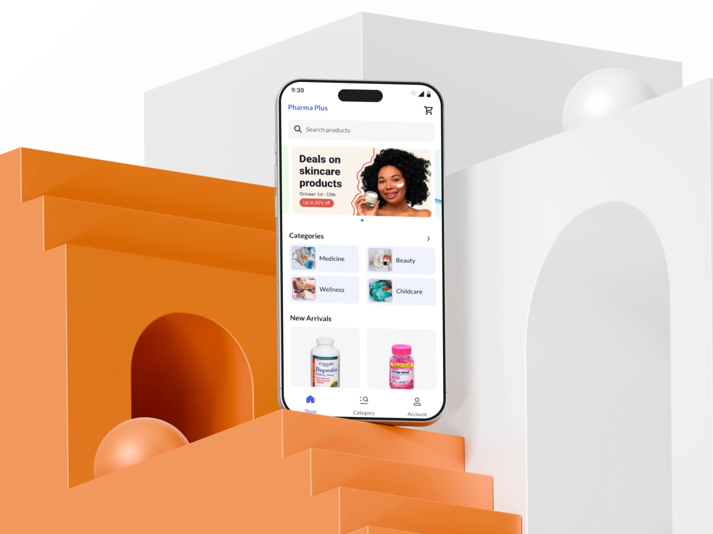
Heroshe has since ceased operations and the original site is offline. The live link is a faithful rebuild of my design, recreated for this portfolio.
View The Site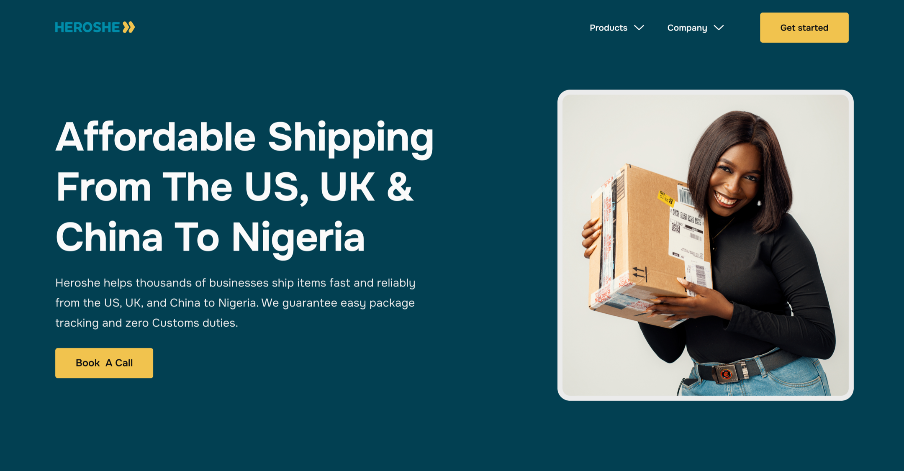
Heroshe started as a shipping company, helping people get products from the US, UK, and China delivered to Nigeria. By late 2024, it was expanding into sourcing, purchasing, and helping businesses sell internationally.
The new website had two jobs. It needed to help four distinct customer groups find the right service quickly. It also needed to show investors the full breadth of the platform and its long-term vision during a fundraising push.
I designed the site in Figma and led the build in Webflow, my first time using the platform on a live project.
The existing site had two limitations:
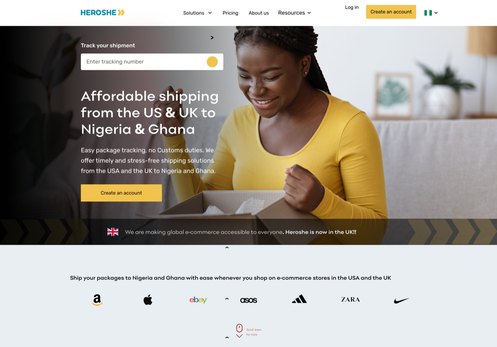
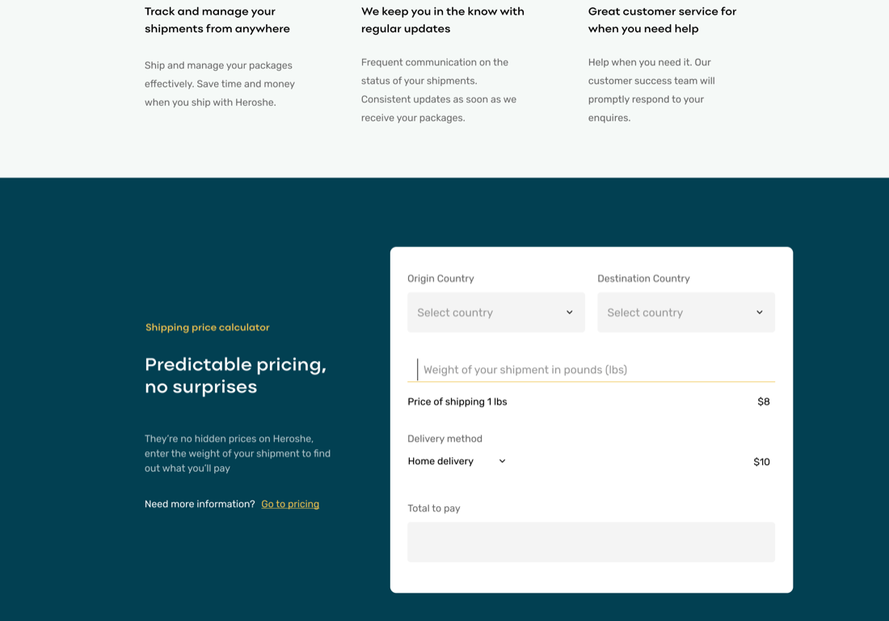
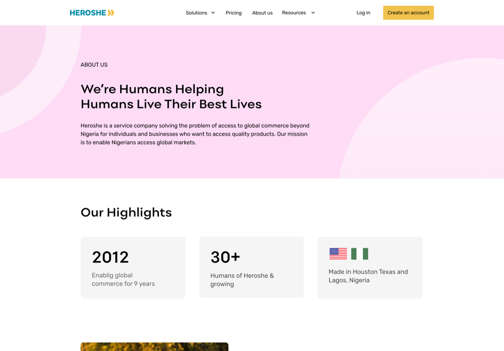
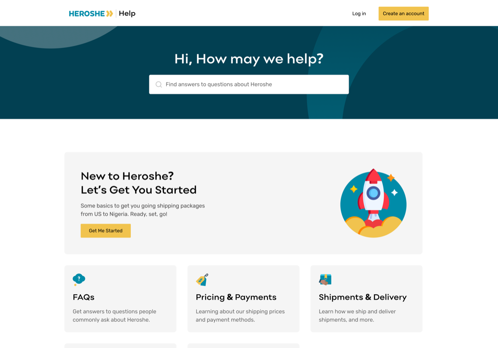
The site had to speak to four customer groups:
And one more reader: investors, who needed to see the whole platform and believe in where it was going.
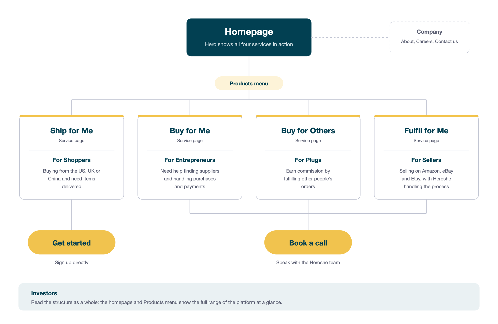
Direction came mainly from the CEO and CTO, who defined the vision and the site structure. The CTO left near the end of the project, and the CEO shaped most of the final direction.
Speaking with customers wasn’t possible within the timeline and circumstances. So I worked from leadership’s understanding of each customer group and focused on turning that vision into a site that was clear and easy to navigate. The copywriting team wrote the page copy.
The space was crowded. Most competitors led with one strength, either shopping from international stores (Mall for Africa, ShopToMyDoor) or logistics and forwarding (GIG Logistics, Aramex Shop & Ship). FlyMyMall came closest to Heroshe’s model.
Heroshe’s case rested on bringing shopping, sourcing, shipping, and selling together in one place. That made clear structure essential, because the site had to show the breadth of the offer without overwhelming anyone looking for one service.
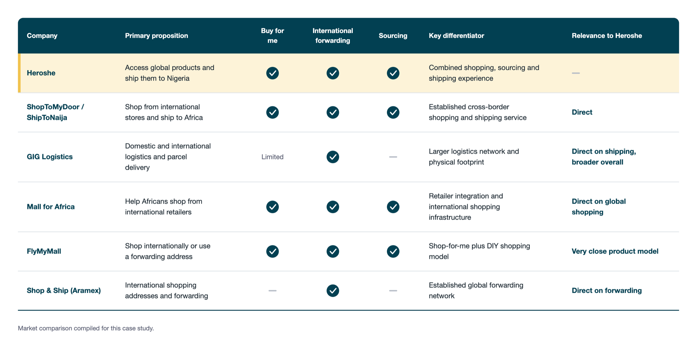
I organised the site around four services, each matching one customer group: Ship for Me, Buy for Me, Buy for Others, and Fulfil for Me. They sit together under a single “Products” menu, and each one has its own page and call to action.
This let a first-time visitor recognise themselves in one click. It also showed investors how much ground the platform covered, just by looking at the menu.
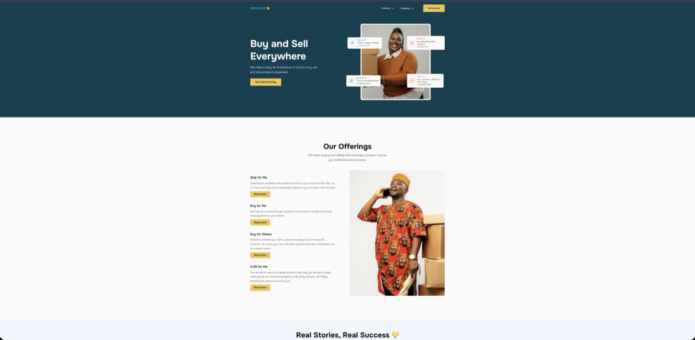
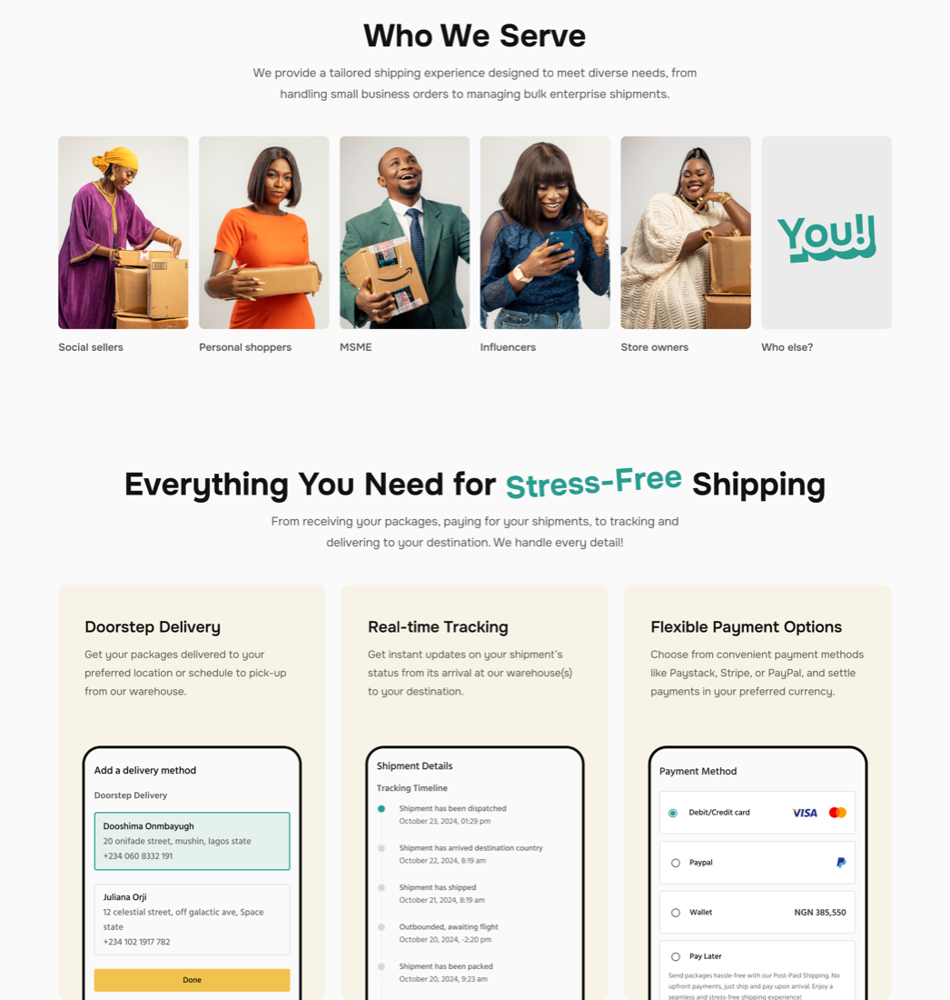
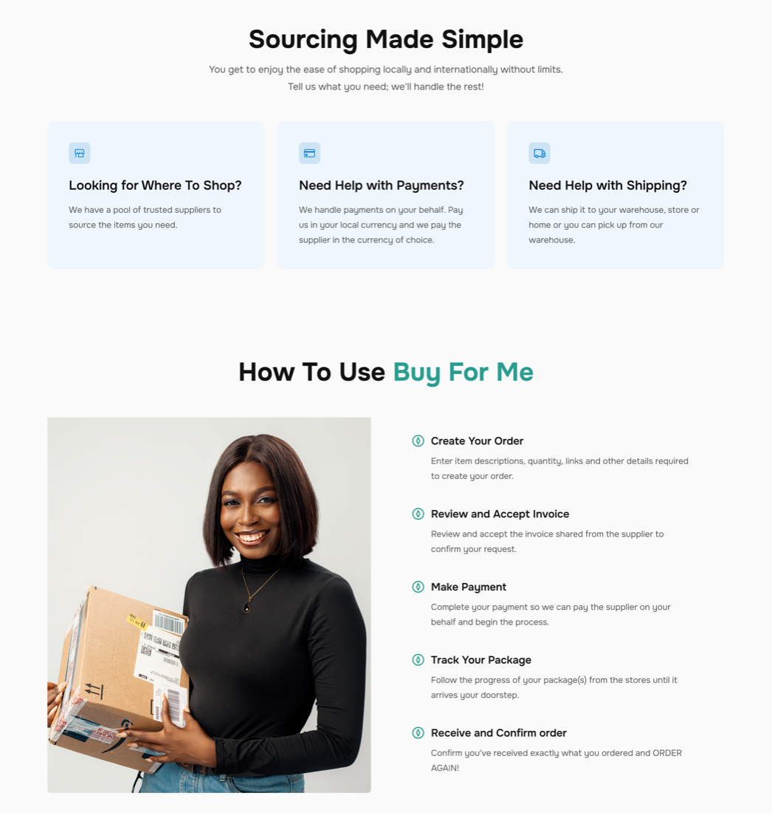
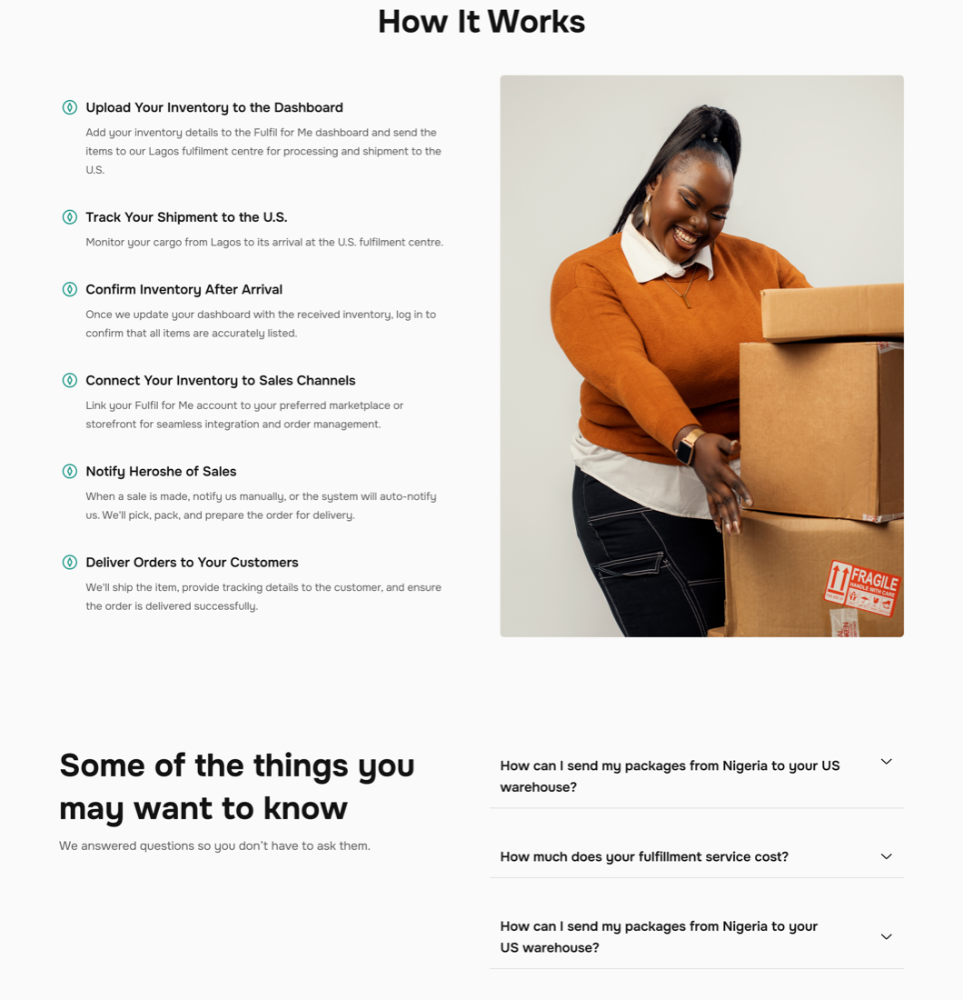
I organised the site around four services, each matching one customer group: Ship for Me, Buy for Me, Buy for Others, and Fulfil for Me. They sit together under a single “Products” menu, and each one has its own page and call to action.
This let a first-time visitor recognise themselves in one click. It also showed investors how much ground the platform covered, just by looking at the menu.
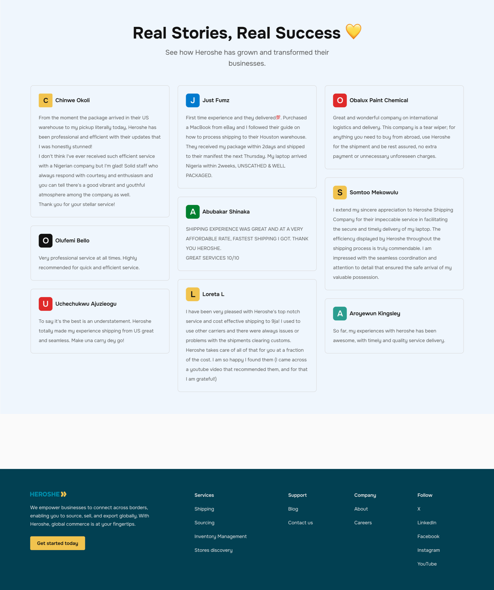
Every structural decision in Webflow was made with a clear goal in mind: the marketing team should be able to update the site without engineering. That shaped how I set up classes and CMS collections from the start.
Webflow was new to me, and I learned it while building a real site on a real deadline. Its class-based styling and CMS structure felt overwhelming at first compared to Figma.
To keep moving, I split the work into phases, finishing the structure and designs before starting the build. I leaned on Webflow University, Finsweet’s Client-First guidelines, community forums, and a lot of hands-on experimentation.
I built most of the site myself, including the class structure, CMS collections, and interactions. Victory joined near the end to build two pages and help with cleanup before launch.
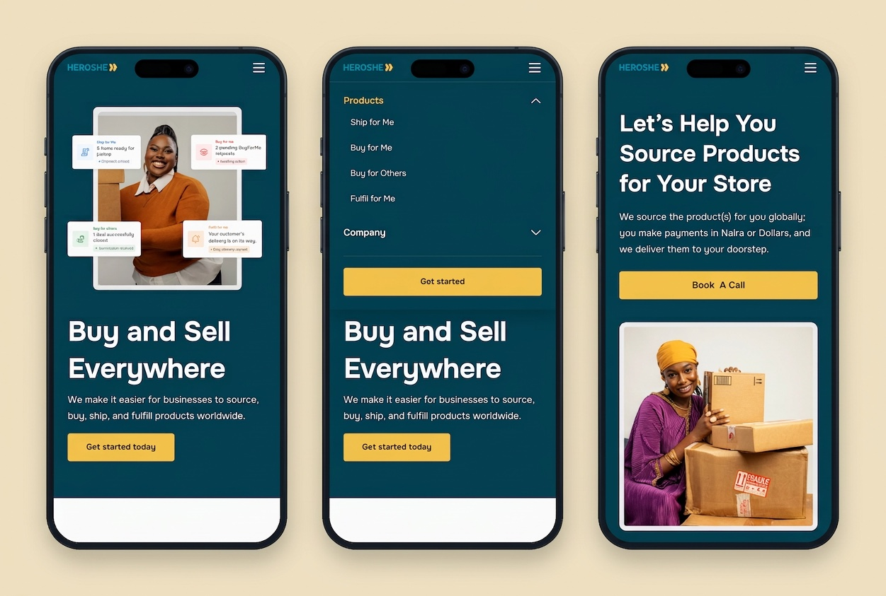
The site launched and moved ownership of updates to the marketing team, removing the dependency on engineering. Leadership used it as a core part of investor conversations during the fundraising push, where it presented the full range of Heroshe’s services and long-term vision.
The raise didn’t close. The company was facing wider financial challenges, and a few months later Heroshe shut down. Because of that, we never ran a planned post-launch review.
What I’m proudest of. I turned a broad, fast-moving vision into four clear paths. Each customer group could find their service within a click, and the same structure showed investors how much ground Heroshe covered.
What I’d do differently. This project taught me how much tension there can be between a site that sells today and one that pitches tomorrow. Investors needed to see ambition and range; customers needed to know exactly what they could use right now. If I did it again, I’d make that line clearer in the design, so the vision could be bold without blurring what was available.
Pharma Plus
A healthcare product concept for easier medication access.
Designed an MVP to bridge the pharmaceuticals accessibility gap for customers residing outside major cities in Nigeria
View Case Study